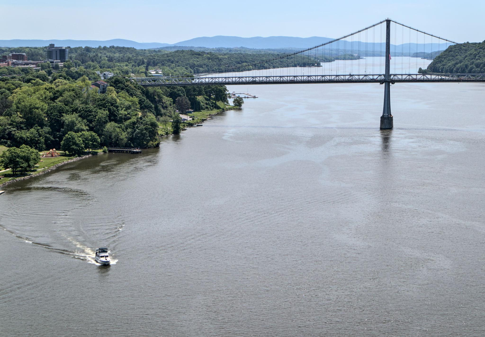
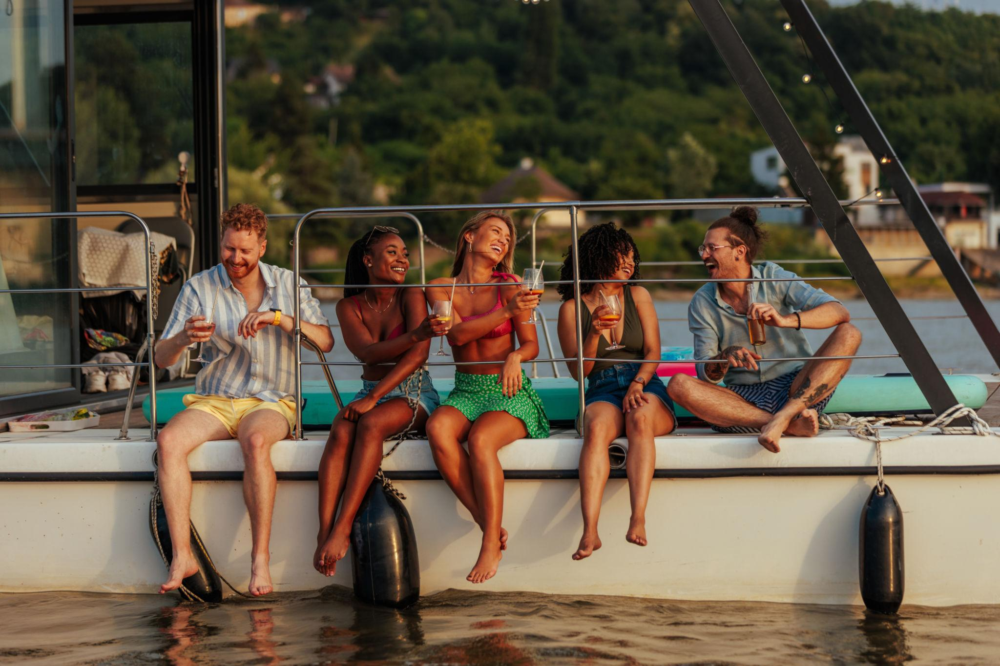
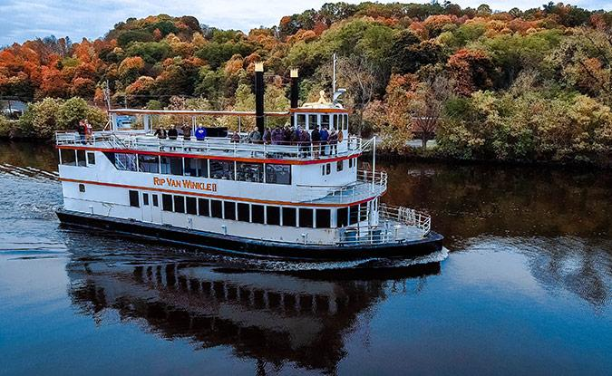
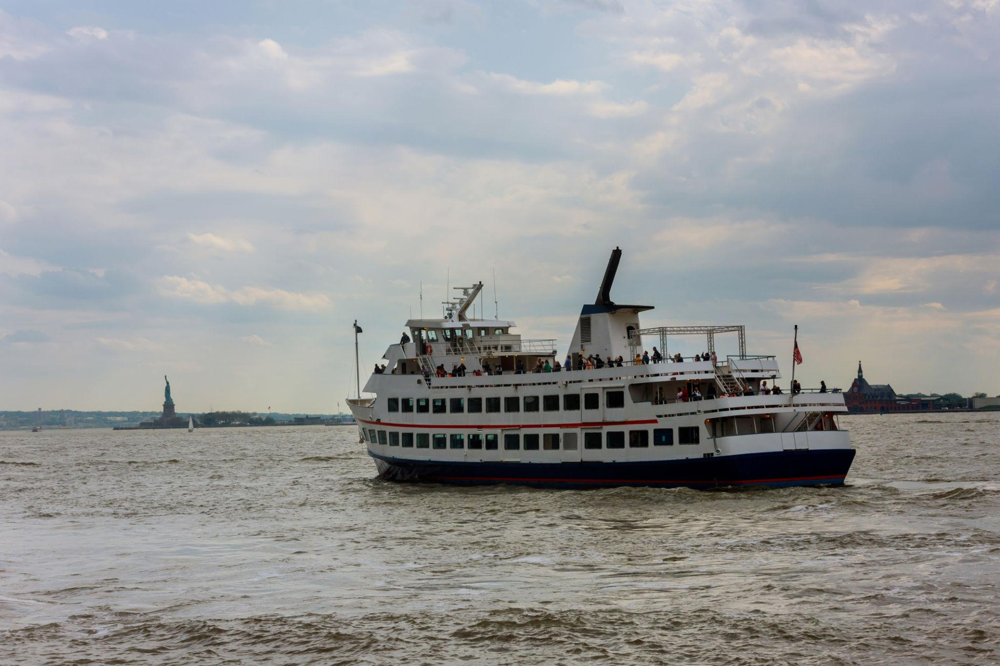
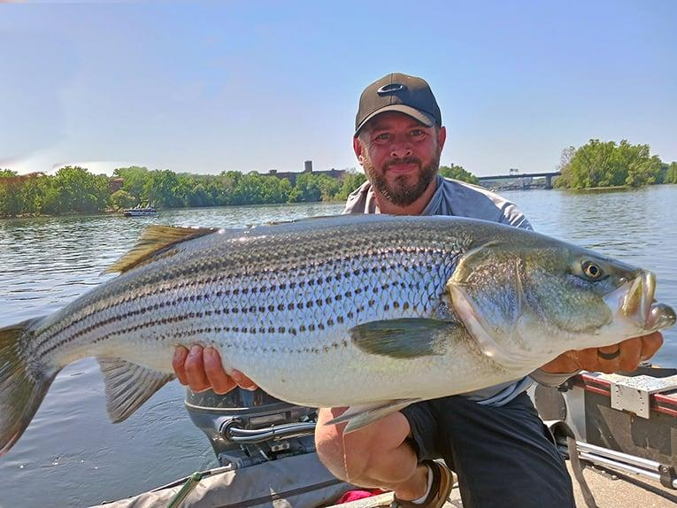
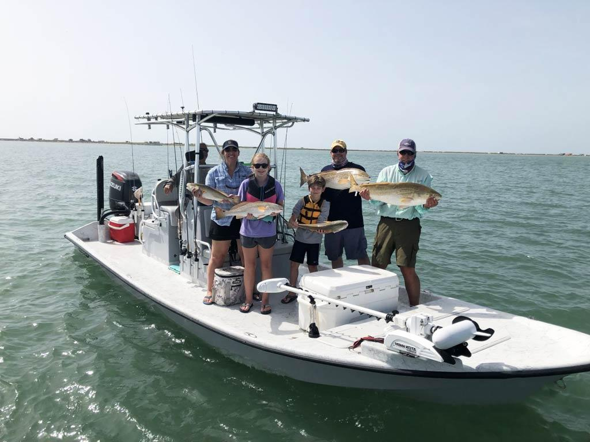
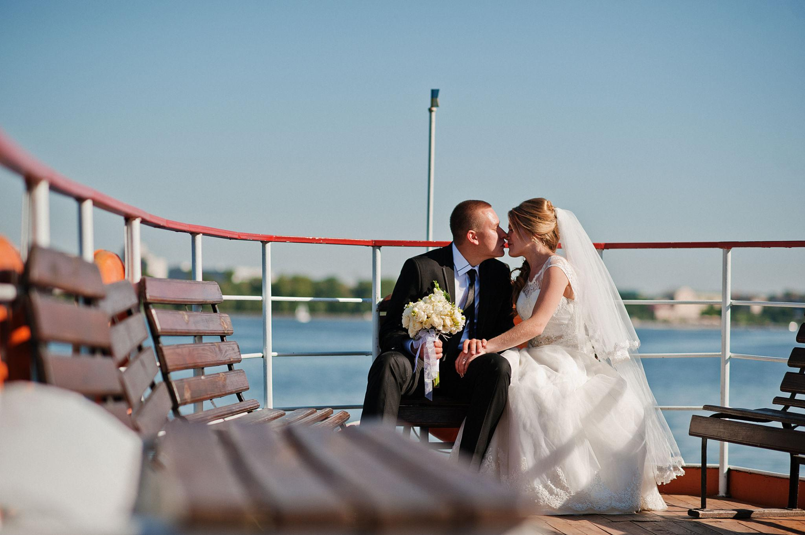
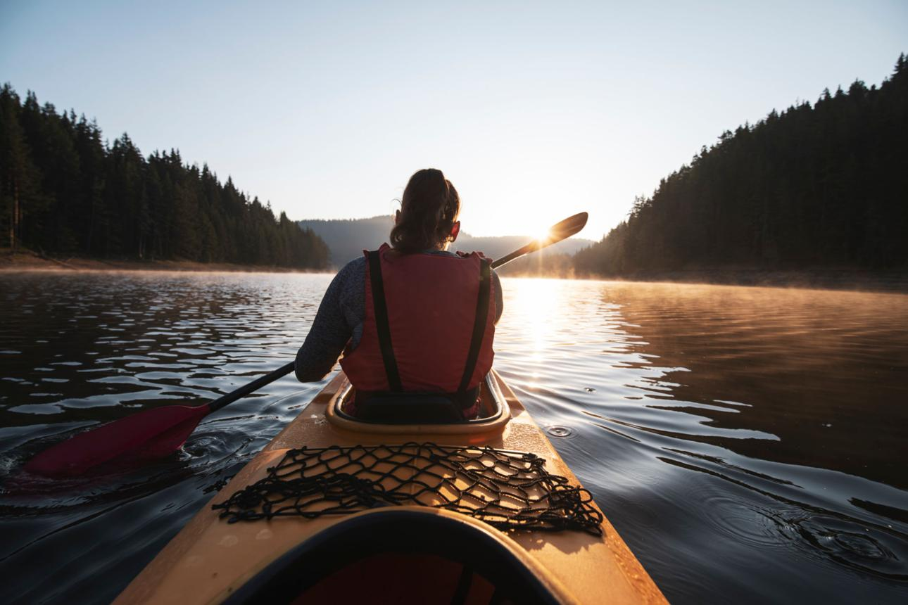
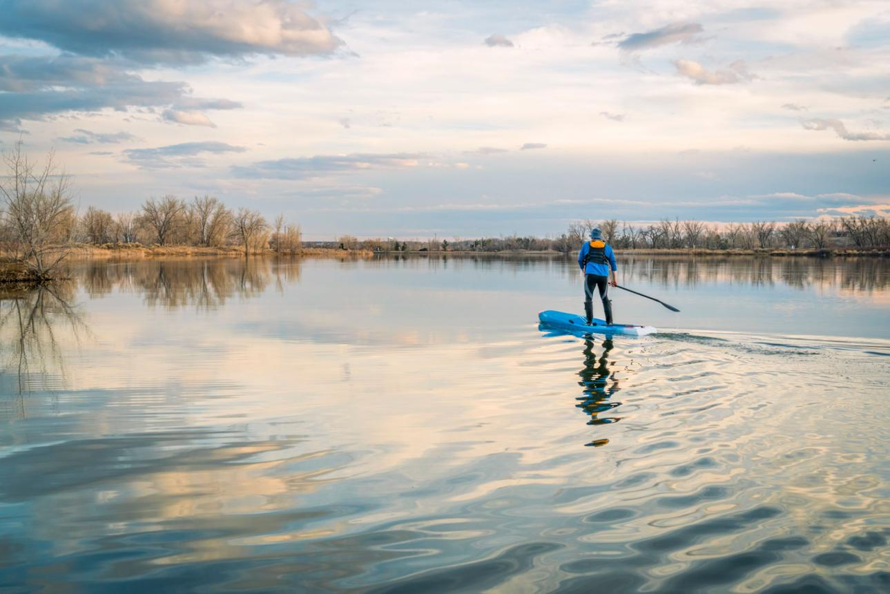

Services
Boat Rentals
Take control of your own adventure on the water with our easy-to-use boat rentals. Whether you're planning a laid-back cruise, a day with friends, or a peaceful escape, you’ll have the freedom to explore the river exactly how you want—no experience needed, just show up and enjoy.


Guided River Tours
Sit back, relax, and let us show you the best of the river. Our guided tours are designed to be both scenic and engaging, giving you a chance to take in incredible views while learning about the history and hidden gems of the area along the way.


Fishing Charters
Spend a stress-free day fishing with everything taken care of for you. Our charters are perfect whether you're brand new or experienced—you’ll get expert guidance, the right gear, and the best spots so you can focus on enjoying the moment (and hopefully landing a great catch).


Private Event Charters
Turn any special occasion into something unforgettable by celebrating on the water. From birthdays to proposals, you’ll have a private space, stunning views, and a one-of-a-kind setting that makes your event feel truly unique and personal.

Kayak & Paddleboard Rentals
Get closer to the water and experience the river at your own pace. Kayaks and paddleboards are perfect if you’re looking for something active but relaxing, giving you the chance to explore quiet areas, enjoy nature, and unwind while getting a bit of exercise.


To Inquire about our services please Call (518) 555-7429 or Email BOOKINGS@LUCCISBOATING.COM